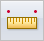
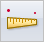

Measure a distance
To learn about the differences between measuring in a model and measuring on a drawing, see the Distance and area measurement help topic.
-
Select one of the following:
-
In a draft document, select Inspect tab→2D Measure group→Measure Distance

. -
In a part, sheet metal, or assembly document, select Inspect tab→3D Measure group→Measure Distance

.
-
-
Click the point to measure from.
-
Click the point to measure to.
-
In a model document, measurements and related information are displayed in the Measure Distance dialog box. See Measuring distances and angles in 3D to learn how you can use this dialog box.
-
On a drawing, the value and scale are displayed temporarily on the drawing sheet. See Measuring distances in 2D to learn how you can use this information.
-
-
Do one of the following:
-
In a model document, on the Measure Distance command bar, click Reset to clear the Measure Distance dialog box and restart the command, or click the next element to measure to.
-
In a Draft document, click the next element to measure to, or right-click to restart the command.
Tip:-
To measure in tight spots, you might want to zoom in on different areas of the part in different windows. You can locate and click points in any window.
-
At any time during the Measure Distance command, you can choose a view manipulation command. When you exit the view command, the Measure Distance command continues at the previous state.
-
You can measure between points in free space or points on elements that are not key points. Use the Element Type list on the Measure Distance command bar to specify the elements to measure to.
-
In an assembly, you can activate inactive parts that you want to measure to by selecting the Activate button on the Measure Distance command bar and then selecting the part.
-
You can copy the measurement value to the Clipboard by highlighting the value and pressing Ctrl+C.
-
You can select a user-defined coordinate system to define one of the points. If you use a coordinate system, the returned values will be relative to the specified coordinate system.
-
Measuring to spacepoints is always available even when you set the filter set to something else.
-
In Draft, when measuring within or to a drawing view, you can choose to display the distance value using the model distance or a user-defined distance by selecting a scale option on the Measure Distance command bar.
-
How do I
Measure a length or a sum of lengthsMeasure an area
Measure elements automatically
Look up more details
Smart Measure commandSmart Measure command bar
Measure Distance command
Measure Distance command bar
Measure Area command
Measure Area command bar
Measure Total Length command
Measure Total Length command bar